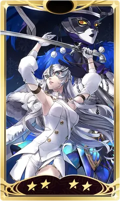

MONT Montagne Kotone
Fonte: https://lufel.net/en/character/mont/ · letto il 2026-11-15 con il browser integrato (spoiler attivi) · Stato Global: rilasciata. Convenzione: nomi di skill, awareness, armi, Persona, set e stat lasciati in inglese come su lufel.net; condizioni ed effetti tradotti in italiano. Valori skill (personaggio 4★) = LV10 / LV10+Minds 5 / LV12 / LV12+Minds 5. Valori armi = refinement R0/R1/R2/R3/R4/R5/R6.
Scheda#
| Campo | Valore |
|---|---|
| Nome | Montagne Kotone |
| Codename | MONT |
| Persona | Terpsichore |
| Rarità / tipo | 4★ · Standard (garantita dalla storia principale) |
| Elemento | Ice |
| Posizione | Assassin |
| Ruolo (lufel) | non indicato |
| Tag (lufel) | Freeze · Resonance |
| Resistenza / Debolezza | Res: Ice · Wk: Psy |
Character Review (lufel)#
- DPS Ice single-target ottenibile in modo garantito tramite la storia principale.
- Raccoglie la sua risorsa unica, ICE CRYSTAL, e quando ne ha 10 o più esegue un attacco critico garantito come effetto aggiuntivo.
- Per gli scontri early-game con nemici deboli al Ice il suo danno è più che sufficiente.
- Tuttavia, per le limitazioni di stat e i bassi moltiplicatori tipici delle 4★, la sua utilità cala drasticamente dopo l'early game.
Pro - Ha un certo livello di danno Ice.
Contro - Ha le limitazioni di stat intrinseche di una 4★.
Recommended Setup (lufel)#
Nota lufel: le impostazioni consigliate sono basate su contenuti futuri; alcune funzioni potrebbero non essere ancora disponibili (Revelation, Mindscape, ecc.).
- Revelation — Space: Meditation (tooltip "Meditation - Opulence": Follow Up CRIT DMG +50%) · oppure Growth (tooltip "Growth - Opulence": Ice DMG Bonus +10% per 2 turni quando attiva un Follow Up, fino a 3 stack) · Sun/Moon/Star/Sky: Opulence ×4 (2-Set: Ice DMG +10% · 4-Set: danno degli attacchi Resonance +40%)
- Main Options — Sun: HP · Moon: Attack / Damage Mult · Star: Crit Mult / Crit Rate · Sky: Attack
- Sub Options — 1ª priorità: Crit Rate / Crit Mult · 2ª: Attack / Damage Mult · 3ª: Pierce Rate
- Recommended Stats — LV12: "-" · LV12+Minds 5: "-"; Battle Entry +: "-"
- Priorità skill — 1º Skill 2 · 2º Skill 3 · 3º Highlight · 4º Skill 1 (tutte a livello 8)
- Mindscape (LV 5) — Rank Strengthening 1: "-" · Rank Strengthening 2: "-" · Skill Enforce 1: "-" · Skill Enforce 2: "-"
- Skill Rotation — A6: 2 › 3 › 2 › 3 › 2 › 3
- Notes (lufel) — nessuna nota.
Skills (LV10 / LV10+Minds 5 / LV12 / LV12+Minds 5)#
Skill 1 — Frost Lily (Ice · SP 20) Infligge danno Ice a tutti i nemici pari all'87.1%/96.0%/90.6%/99.5% dell'Attack. 29.3%/29.3%/30.5%/30.5% di probabilità di infliggere Freeze.
Skill 2 — Winter Storm (Ice · SP 20) Infligge danno Ice a 1 nemico pari al 160.4%/176.8%/166.9%/183.4% dell'Attack. Ottiene 4 stack di Ice Crystal.
Skill 3 — Durandal of Ice (Ice · SP 24) Infligge danno Ice a 1 nemico pari al 179.7%/198.1%/187.0%/205.5% dell'Attack. Quando Kotone ha Parhelion o 10+ stack di Ice Crystal, aumenta il danno in base agli HP persi dal nemico (fino al 29.3%/29.3%/30.5%/30.5%). Quando Blade Dancer si attiva, aumenta il danno in base agli HP persi dal nemico (fino al 29.3%/29.3%/30.5%/30.5%).
HIGHLIGHT (cooldown 4 turni) Infligge danno Ice a 1 nemico pari al 292.8%/322.8%/304.8%/334.8% dell'Attack. Aumenta il danno in base agli HP persi dal nemico; con HP del nemico sotto il 20%, fino al +30%.
Passiva — Frozen in Time: danneggiando i nemici con Blade Dancer, 100.0% di probabilità di infliggere Freeze.
Passiva — State of Selflessness: quando Kotone sconfigge un nemico, ottiene 4 stack di Ice Crystal.
Awareness#
- A0 — Blade Dancer (talento base): all'azione di un alleato, ottiene 1 stack di Ice Crystal; fino a 12 stack. Dopo aver usato una skill, quando Ice Crystal raggiunge 10 stack, attiva una Resonance spendendo 10 stack di Ice Crystal per infliggere al bersaglio principale un follow-up Ice del 65%. Questa Resonance è un critico garantito. Usando Frost Lily o Winter Storm, se la Resonance si attiva ottiene Parhelion. Parhelion serve a potenziare Durandal of Ice.
- A1 — Camel Spin: alla fine del turno di Kotone, ottiene uno scudo pari al 15% dell'Attack per 1 turno.
- A2 — Ice Princess: aumenta il danno della Resonance in base agli HP persi dal nemico (fino al 50%).
- A3 — Heart of Ice: aumenta di 2 i livelli di skill di Frost Lily e Winter Storm.
- A4 — Resilience: Highlight Enhanced: danno dell'Highlight aumentato fino al 60%.
- A5 — Axel Jump: aumenta di 2 i livelli di skill di Durandal of Ice e Thief Tactics.
- A6 — Opening Ceremony: all'inizio della battaglia ottiene 4 stack di Ice Crystal. Stack massimi di Ice Crystal aumentati a 15.
Stats#
- Base (LV1): HP 218 · ATK 76 · DEF 41 · Speed 99
- Hidden Ability LV7: ATK % 21.8%
- LV80 (HP / ATK / DEF): A0 2452 / 862 / 465 · A1 2480 / 872 / 471 · A2 2509 / 882 / 476 · A3 2537 / 892 / 481 · A4 2565 / 902 / 487 · A5 2594 / 912 / 493 · A6 2622 / 922 / 497
Armi esclusive (valori R0/R1/R2/R3/R4/R5/R6)#
5★ Queen of Winter — HP 2160 · ATK 760 · DEF 410 — passiva Hiver Éternel - Aumenta il danno critico del 36.3%/36.3%/47.2%/47.2%/58.1%/58.1%/69.0%. - Attiva Blade Dancer a 8+ stack di Ice Crystal e ne aumenta il danno del 46.0%/68.0%/68.0%/90.0%/90.0%/112.0%/112.0%. - Aumenta la potenza di Durandal of Ice a 8+ stack di Ice Crystal.
4★ Edelweiss — HP 1729 · ATK 608 · DEF 328 — passiva Don Glacial - Aumenta l'Attack del 12.0%/12.0%/16.0%/16.0%/20.0%/20.0%/24.0%. - Ogni volta che Kotone ottiene stack di Ice Crystal, danno Ice +2.4%/3.1%/3.1%/3.8%/3.8%/4.5%/4.5% per 1 turno; fino a 10 stack.
Attribute Mindscape (lufel: introdotto in KR V5.2, forse non ancora su Global)#
- Mindscape Synergy: nessuna consigliata (slot vuoto su lufel).
- Mindscape Combat Skill: nessuna consigliata (slot vuoto su lufel).
Recommended Combination (lufel)#
- Sezione non presente nella pagina lufel di questo personaggio.
Recommended Parties (lufel)#
- Sezione "Recommended Parties Example" presente ma vuota nella pagina lufel (nessun party elencato).
Nomenclatura#
- lufel: "Montagne Kotone" (codename MONT; la versione alternativa è MONT·Frostgale, guida separata), slug URL
mont. Stati/risorse: Ice Crystal (ICE CRYSTAL nella review), Parhelion, Blade Dancer (Resonance). - Nelle descrizioni lufel "critical damage" = Crit Mult.